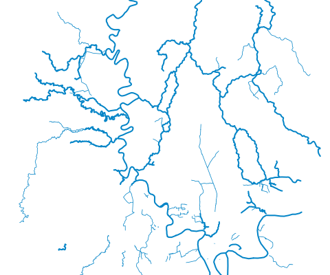

Áreas operativas, brigadas, unidades y recursos
Guía educativa no oficial del BCBD para estudiar, repasar y prepararse.
Áreas operativas
Recursos y guías
Herramientas bomberilesUso, mantenimiento y seguridad
Stop the BleedControl de hemorragias en situaciones críticas
InstituciónMisión, visión y estructura organizacional
Historia del BCBDHistoria y evolución institucional

GIS DauleTerritorio, ambiente y observaciones de campoAbrir el mapaRíos: © OpenStreetMap, 2 oct 2026

Exploración interactiva · 3D
Conoce los acoples de la manguera
Explora las piezas, desenrosca la unión y practica cómo orientarte hacia la unidad o el pitón.